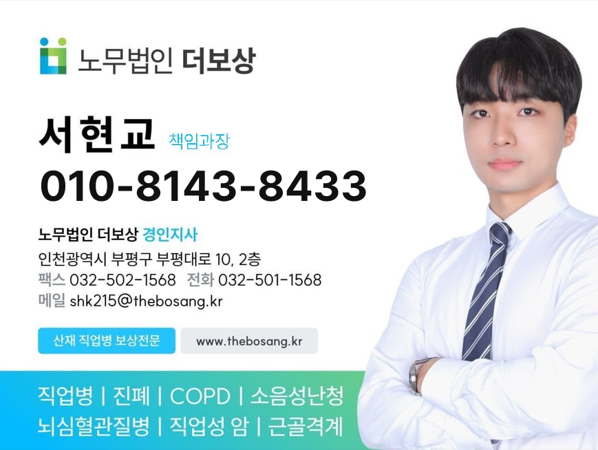

산재 · 직업병 보상 전문
서류 한 장이 모자라 인정받지 못하고, 몇 달을 기다리다 지쳐 포기합니다. 무엇이 부족한지부터 짚어 드립니다. 상담은 무료입니다.
아래 중 하나라도 해당되면 산재로 인정받을 수 있는지 확인이 필요합니다.
상담과 사건 검토에 착수금이 들지 않습니다. 받을 수 있는 사건인지부터 확인하고, 가능성이 없으면 그렇게 말씀드립니다.
산재는 서류와 시점 싸움입니다. 어떤 자료가 필요한지, 지금 신청이 되는지, 불승인을 뒤집을 여지가 있는지 — 비용 부담 없이 먼저 확인하시면 됩니다.
산재만 다루기 때문에 질환별로 무엇이 쟁점인지 알고 시작합니다.
전화 한 통이면 시작됩니다. 준비하실 서류는 상담 후에 알려 드립니다.
어떤 일을 하셨고 지금 어디가 불편하신지만 말씀해 주세요.
근무 이력과 진단 내용을 보고 인정 가능성을 먼저 판단합니다.
필요한 자료를 함께 모으고 신청서와 의견서를 작성합니다.
승인 후 급여 청구까지, 불승인 시 심사청구까지 이어서 대응합니다.
노무법인 더보상이 처리한 사례입니다. 같은 질환이라도 결과는 근무 이력과 자료에 따라 달라집니다.
상담 전에 읽어두시면 무엇을 물어봐야 할지 정리가 됩니다.

노무법인 더보상 경인지사에서 산재·직업병 보상을 맡고 있는 서현교 책임과장입니다. 상담 전화는 대표번호를 거치지 않고 제 번호로 바로 연결됩니다.
어렵게 설명드리지 않겠습니다. 지금 상황에서 신청이 되는지, 무엇이 부족한지, 얼마나 걸리는지를 먼저 말씀드립니다.
남겨 주시면 서현교 책임과장이 직접 연락드립니다. 상담은 무료이며 비공개로 진행됩니다.